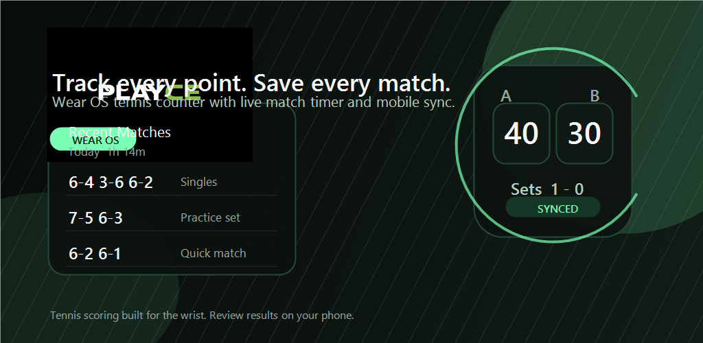

Live match
Player A
40Player B
ADWear OS scorer

Native Android + Wear OS
PLAYCE is a tennis scoring system built for real courtside use. Track live points on your Wear OS watch, sync to Android instantly, then review history, stats, exports and share cards after the match.
Player A
40Player B
ADWear OS scorer
LIVE FROM WATCH
01:23:44Android companion
Full tennis scoring with deuce, advantage, sets, standard tiebreaks and configurable formats.
Wearable Data Layer messaging with pending state, retries and ACK handling between watch and phone.
Native Android app with release signing, premium unlock, local persistence and Play Store submission flow.
The product
PLAYCE is structured around a simple idea: the watch is the input device during play, and the phone is the companion display, archive and sharing hub afterwards.
01 / On court
Use the watch to track points, undo mistakes, monitor the server, follow tiebreak rotation and finish the match with a manual save flow that keeps state visible.
02 / In your pocket
History, detail screens, stats, CSV export, widget and share cards live on the phone companion app.
03 / Premium
Free mobile counter by default, with a one-time premium unlock for save, history, detail and sharing.

Experience
The interface language is minimal and high-contrast because tennis scoring needs legibility first. Large numerals, sharp section rhythm, restrained color and clear state transitions keep the app fast to read in the middle of a point.
Configure player names and match format, then push it to the watch before play starts.
The live score syncs to the phone while the watch remains the primary scorer.
Pending match state is stored locally until the phone acknowledges receipt.
Once saved, the match becomes part of the Android-side archive and sharing flow.
Feature set
This landing is aligned with the current codebase, so what you read here reflects what the app is actually shipping toward.
Tap-based scoring with optional hardware buttons and responsive score layouts for small circular screens.
Points, games, sets, deuce, advantage, tiebreaks, super tiebreak and configurable match formats.
Wearable Data Layer with idempotent result delivery, pending storage and acknowledgment cleanup.
Room-backed local archive with final score, set breakdown and dedicated match detail screens.
Match counts, duration summaries, CSV export and a home screen widget for the latest result.
Google Play Billing one-time purchase unlocks save, history, detail and share features on mobile.
Ready for release
The Android app and Wear OS scorer are already organized around a clear product story. This website makes that story visible without overstating the roadmap.
FAQ
Yes. The web landing lives in its own `website/` directory, so it does not interfere with the Gradle modules.
Yes. It is a static site with local assets, so Vercel can serve it directly by using `website/` as the project root.
That is the goal. The copy avoids unsupported Apple-specific claims and reflects the Android + Wear OS product that exists in this repository.